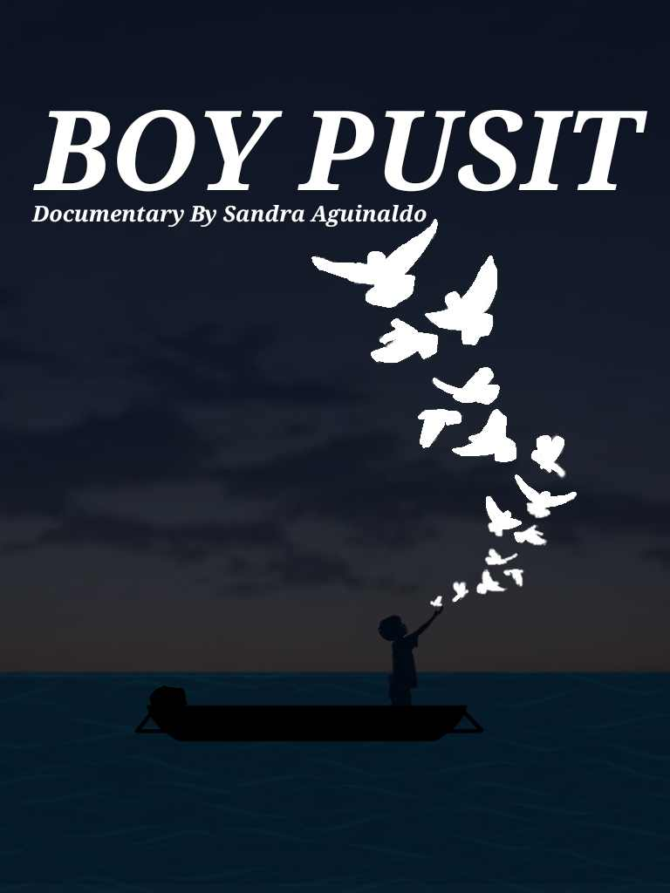

- 
Ang "Boy Pusit" ay isang dokumentaryo ni Sandra Aguinaldo na unang ipinalabas noong 2017 sa programang I-Witness ng GMA Network. Sa dokumentaryong ito, sinamahan ni Sandra Aguinaldo ang isang grupo ng mga bata mula sa Sitio Paradahan sa Masbate upang masaksihan ang kanilang pang-araw-araw na buhay bilang mga mangingisda ng pusit.
Ipinapakita ng dokumentaryo ang mga hamon at panganib na hinaharap ng mga batang ito sa kanilang murang edad habang nagtatrabaho sa dagat upang makatulong sa kanilang mga pamilya. Binibigyang-diin nito ang kahirapan at kakulangan ng mga oportunidad sa edukasyon na nagtutulak sa kanila na pumasok sa ganitong uri ng hanap buhay at ang hanap buhay na pinasok ay nagiging hadlang upang hindi makamit o mahirapan na maabot ang mga pangarap na binibitawan upang mabuhay sa pangaraw araw na paghihirap sa mundonh ibabaw at sa kabila ng kakulangan sa pangangailangan sa araw araw hindi nawawala ang kanyang determinasyon sa mata ng bata makikita ang pag-asa kahit pa ang daming hamon na kinakaharap dulot ng kahirapan.
At ang dokumentaryo ito ay hindi lamang tumuon sa kwento ng bata na naghihirap kundi ipinakita rin ang mas malawak na konteksto ng kahirapan sa mga pamayanang mangingisda sa Pilipinas.